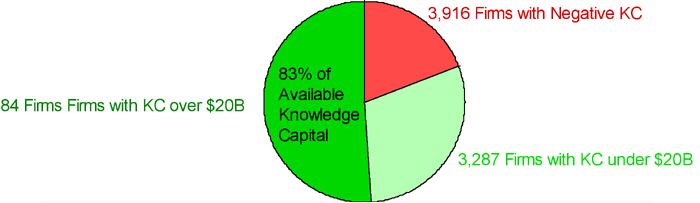
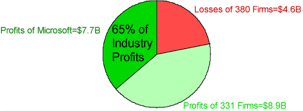

|
May 2000 subscribe e-mail the editor |
Knowledge power in the cyber-economyConcentration of economic power to a greater extent than ever before is now feasible.By Paul A. Strassmann
In the cyber-economy, according to prophets in publications such as Wired, anyone with imagination can take advantage of the new opportunities and grab untold wealth that is waiting to be picked up. In this utopia anyone can transcend the limitations previously imposed by geography, culture, possession of capital or access to special privileges. It should be obvious that I do not subscribe to this vision of easy opportunity. In fact, my research shows that such a dispersal of wealth is illusory. In a previous column ("The Importance of Knowledge Capital," March 2000 KMM) I suggested that, despite claims to the contrary, accumulation of Knowledge Capital (KC) is more likely to be concentrated than widespread. I want to elaborate on this important topic through a few examples that illustrate some current trends. When we consider the distribution of ownership of Knowledge Capital in the United States (among 7,288 publicly traded firms for which such data is available), it is surprising how much is held by a relatively few firms.
|
 Discussion of knowledge capital and knowledge assets often is accompanied by
euphoric visions from a new class of futurists whom I call "cyber-utopians." They
tout the increased capacity of individuals to accumulate wealth without any of the
limitations imposed by industrial-age financial capital, such as making profits and
earning revenues. One of the favorite constructs of the cyber-utopians is to speculate
about the liberating capacity of the Internet to enable a small organization to operate
with all of the advantages of a giant enterprise. Accordingly, the Internet can endow
any entrepreneur with the powers to construct a virtual enterprise that can appear to
be worth more than established corporations with tens of thousands of workers and
long histories of delivering products or services. Thus, "knowledge capital" can be
expanded without regard to balance sheets, accountants, bricks-and-mortar offices or
outlets or physical products. In this view, "knowledge" is intangible and therefore
infinitely inflatable.
Discussion of knowledge capital and knowledge assets often is accompanied by
euphoric visions from a new class of futurists whom I call "cyber-utopians." They
tout the increased capacity of individuals to accumulate wealth without any of the
limitations imposed by industrial-age financial capital, such as making profits and
earning revenues. One of the favorite constructs of the cyber-utopians is to speculate
about the liberating capacity of the Internet to enable a small organization to operate
with all of the advantages of a giant enterprise. Accordingly, the Internet can endow
any entrepreneur with the powers to construct a virtual enterprise that can appear to
be worth more than established corporations with tens of thousands of workers and
long histories of delivering products or services. Thus, "knowledge capital" can be
expanded without regard to balance sheets, accountants, bricks-and-mortar offices or
outlets or physical products. In this view, "knowledge" is intangible and therefore
infinitely inflatable.|  | ||
|
The total available Knowledge Capital for these firms was $6,412 billion,
distributed as follows: 84 firms each had KC of more than $20 billion and as a group
accounted for a total of $5,331 billion; 3,287 firms each had KC of less than $20
billion and accounted for $3,078 billion total; and 3,916 firms had negative KC (that
is, they were unable to compensate for their net financial assets at the prevailing
costs of financial capital), which produced for a negative total of $1,997 billion. This concentration of capital was reported in 1998 annual reports. In 10 years this distribution may be even more constricted. Stock market valuations from 1999 suggest that investors anticipate only a small number of surviving winners whenever the current economic cycle shakes out.
Survival of the FattestU.S. society favors the "winner-take-all" mentality of the information technology industry, even though these tendencies have been legislated as un- American conduct since Teddy Roosevelt was president. "New economy" enthusiasts find it convenient to overlook such precedents. The profit characteristics of the software industry and its dominant firm, Microsoft, illustrate this phenomenon.
|
|  | ||
|
The total global software industry profits for 1998 among public companies
were $12 billion. Microsoft accounted for $7.7 billion of that (and has added reserves
on top of that). Another 331 firms accounted for a total of $8.9 billion (including
Oracle, which earned $1.1 billion), and the remaining 380 firms reported losses of
$4.6 billion. Yet one of the main arguments Microsoft raised in its anti-trust defense
was a claim that there are thousands of software firms in existence and that entry into
the software business is easy. To my knowledge nobody contested that argument,
although it is like a great white shark pleading for endangered wildlife status based
on the count of salmon in the Columbia River. The Microsoft case is an example of a
dominant vendor successfully transplanting Knowledge Capital to customers to
affect their purchasing habits and make them captives. The examples of trends toward concentration of economic power despite rapidly rising technological diversity are numerous. Let me offer just two. The first deals with the enormously popular search engines that everyone uses to look for relevant information among more than three billion Internet pages. My catalogue shows that more than 250 search engine software packages or services are available, and the market is growing at the rate of about one per week. Given such variety, one would expect diversified usage habits, but that is not the case. In December 1999 one search engine - Yahoo - accounted for 56 percent of all Internet referral traffic. The Yahoo case is an example of persistence of habits among Internet users, which a successful vendor can leverage into market power. A more potent and possibly farther-reaching economic influence comes from the rapid expansion of business-to-business transaction consortia. One can only speculate about the effects on prices of industrial components that will result from the concentration of purchasing power due to the recently announced CommerceOne/Oracle venture. In this offering, four automobile firms - which have revenues of $566 billion out of total industry revenues of $1,160 billion - will use Internet-based procurement to obtain bids directly from 30,000 firms, without intervention by brokers, wholesalers or purchasing departments. The current estimate is that this may eliminate as much as $3,000 in costs of a $22,000 vehicle. The CommerceOne case is an example of successful implantation of an information intermediary to demolish existing institutions that have lost their utility. In summary, the tendencies toward concentration of economic power, on a global scale, are cropping up everywhere. At the moment this trend is being overlooked in the rush to make a killing in IPOs of dot-coms that promise to gain choice shares of global commerce. These expansionary trends are justified, not unlike the promises of sea captains embarking on journeys to the Spice Islands in the 16th century. Not since the occupation of the New World by the Spanish, the British takeover of worldwide colonies or the American land rush has so much wealth been available for the taking. The promises of enormous profits to be made from e-commerce are real. But long after the surviving ship captains of the information age have retired to their estates, a few imperial fleets will remain to take over and manage colossal accumulations of Knowledge Capital with economic power never seen before in history.
Paul A. Strassmann originated the trademarked concepts "information productivity," "return-on-management" and "knowledge capital." |